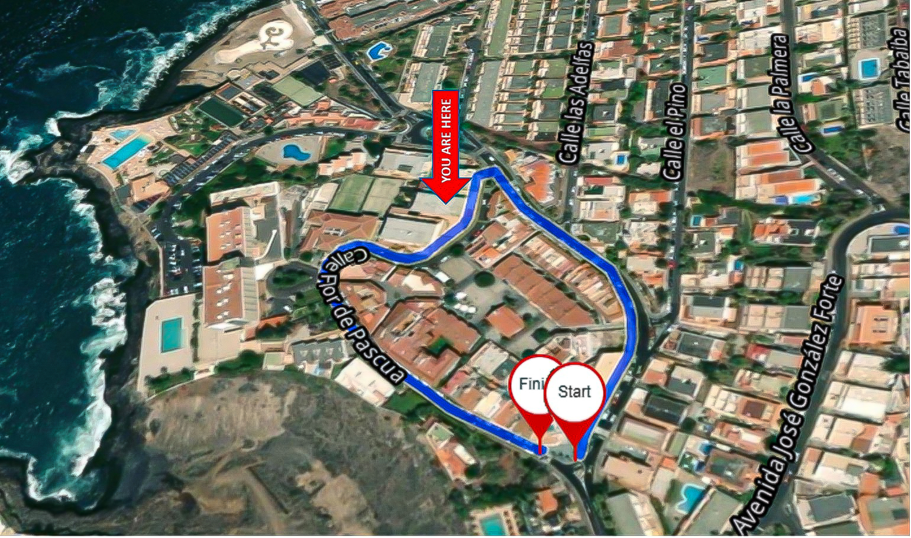
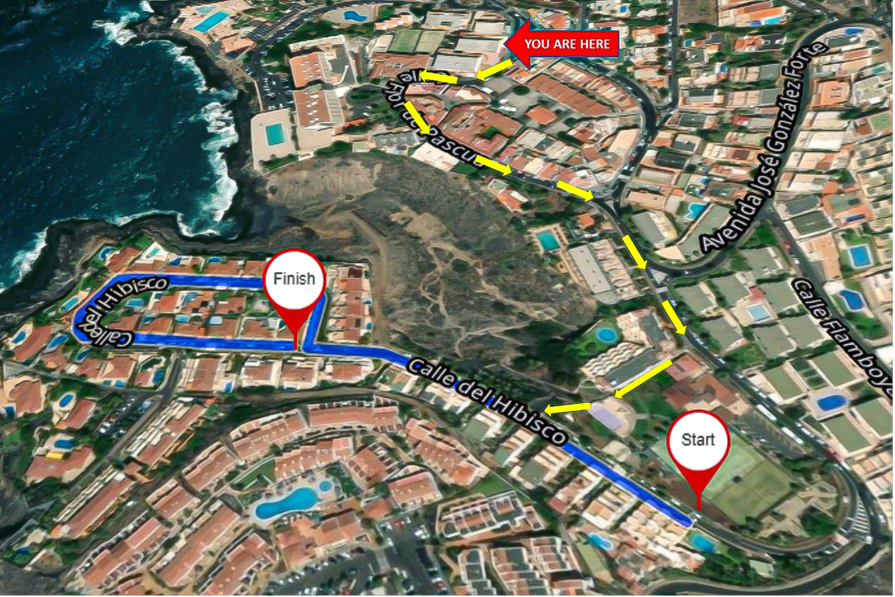
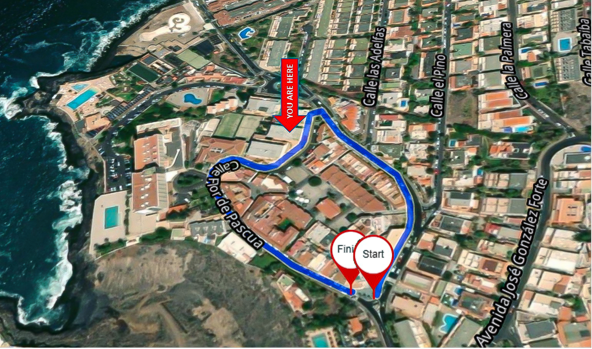
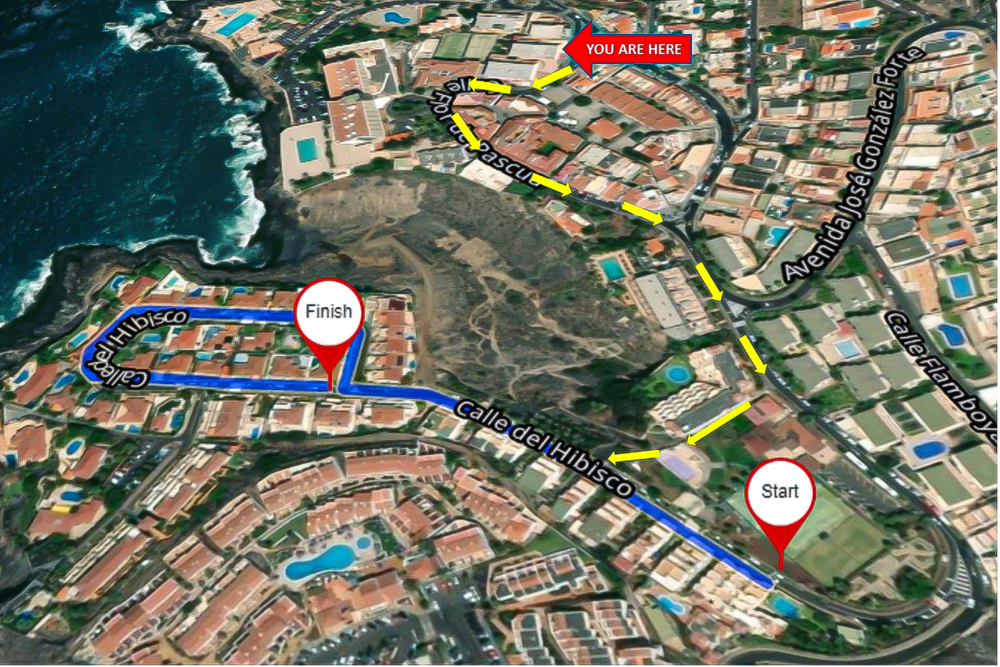

Náš apartmán se nachází v klidném a malebném městečku Puerto de Santiago a nabízí jedinečnou kombinaci klidné relaxace a místního šarmu. Apartmán má ideální polohu a poskytuje hostům ideální zázemí pro poznávání úchvatných přírodních krás a zajímavých památek této oblasti.
Jen kousek odtud se nachází nádherné Los Gigantes, proslulé kolosálním výhledem na útesy a okouzlujícím přístavem. Vychutnejte si pohodové procházky podél přístavu nebo se vydejte na výlet lodí a prohlédněte si majestátnost útesů zblízka.
Jen pár kroků od apartmánu se nachází okouzlující místní pláž, která je ideální pro koupání v oceánu, kdykoli na to dostanete chuť.
V okolí najdete řadu krásných pláží, včetně oblíbených Playa de Santiago a La Arena Beach a přírodní bazénky, které jsou ideální pro opalování, plavání a poznávání zdejší pohodové plážové atmosféry.
Zájemci o místní stravování a nakupování mohou v Puerto de Santiago navštívit řadu restaurací, kaváren a obchodů, které představují místní chutě a kulturu. Okolní města nabízejí další možnosti zábavy a poznávání, díky čemuž je zde vždy co nového objevovat.
Puerto de Santiago je také výborným výchozím bodem pro poznávání dalších částí Tenerife. Vydejte se na jednodenní výlet a poznejte rozmanitou krajinu ostrova, od drsné krásy národního parku Teide až po půvabné pobřežní vesničky. Ať už hledáte dobrodružství nebo odpočinek, naše okolí má každému návštěvníkovi co nabídnout.

 
